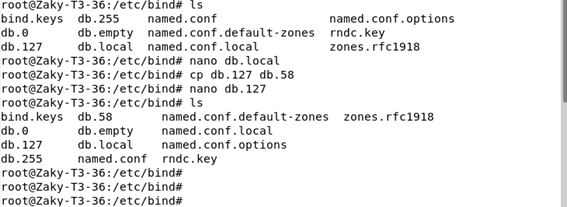
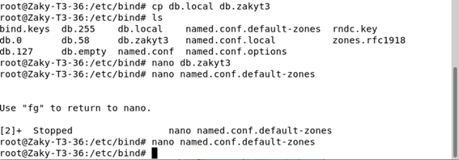
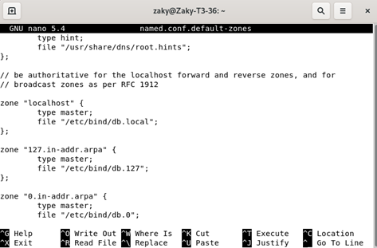
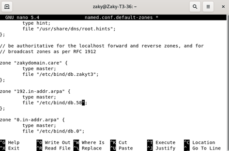
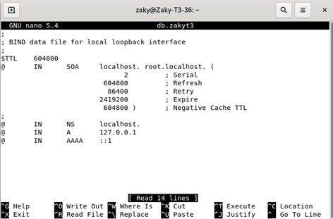
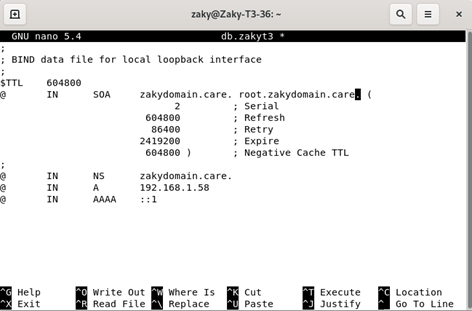
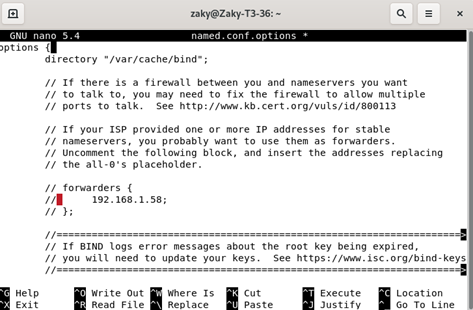
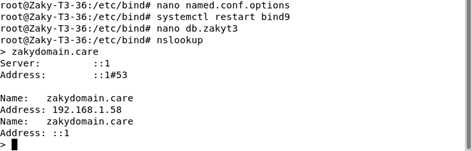
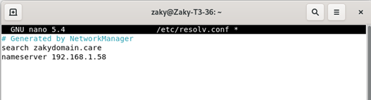
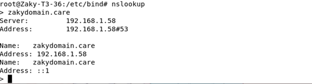

Setting Bind9
1. Pertama, gunakan command cd /etc/bind untuk pergi ke bind. Lalu copy db.127 ke db.58 dengan command cp db.127 db.58

2. Lalu copy db.local ke db.zakyt3 dengan command cp db.local db.zakyt3

3. Berikutnya, buka nano named.conf.default-zones lalu ubah localhost ke zakydomain.care , db.local ke db.zakyt3 , 127 ke 192 dan db.127 ke db.58 lalu simpan


4. Kemudian, buka nano db.zakyt3 lalu ubah localhost ke zakydomain.care dan 127.0.0.1 ke 192.168.1.58 lalu simpan


5. Selanjutnya, masuk ke nano named.conf.options lalu ubah 127.0.0.1 ke 192.168.1.58 lalu simpan

6. Kemudian, restart bind9 dengan command systemctl restart bind9 . Lalu gunakan command nslookup lalu masukkan zakydomain.care untuk mengecek alamat ip

7. Lalu buka nano /etc/resolv.conf . Selanjutnya tambahkan
search zakydomain.care
nameserver 192.168.1.58

8. Berikutnya, masukkan command nslookup untuk melihat perubahan
